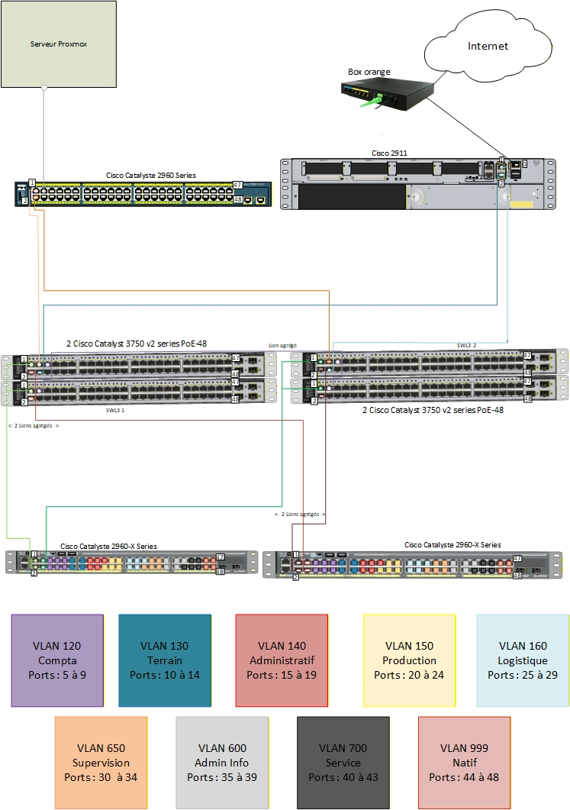
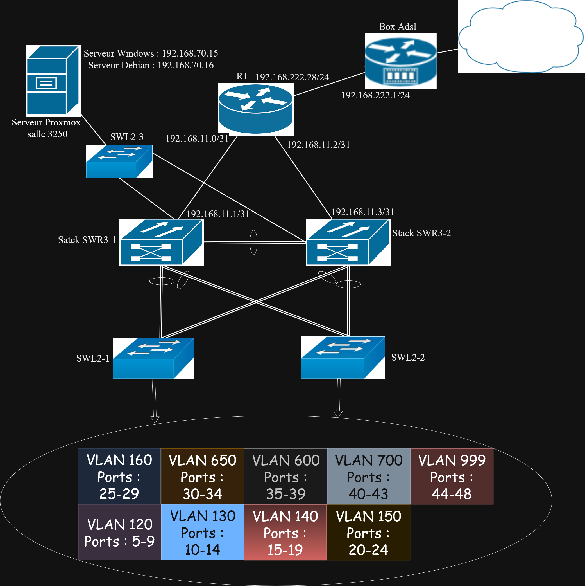

Bienvenue sur mon Portfolio
Finalité de ce portfolio
Ce portfolio a pour objectif de documenter et analyser ma trajectoire de développement tout au long de ma formation en BUT Réseaux et Télécommunications. Il présente les compétences que j'ai développées à travers les différentes Situations d'Apprentissage et d'Évaluation (SAÉ), en mobilisant des traces et des preuves issues de mes réalisations concrètes.
Ma démarche de progression
Mon approche se base sur une démarche réflexive continue. Pour chaque SAÉ, j'analyse mes réussites, mes difficultés, et les compétences développées. Cette démarche me permet de devenir acteur de ma formation, de prendre du recul sur mon évolution, et d'acquérir l'autonomie nécessaire pour devenir un professionnel des réseaux et télécommunications.
Les 4 compétences du BUT R&T
🔐 Compétence 1
Administrer les réseaux et l'Internet
Configuration switches, routeurs, VLAN, sécurisation SSH, administration serveurs
📡 Compétence 2
Connecter les entreprises et les usagers
Analyse spectrale, mesures radioélectriques, réseaux mobiles 2G/3G/4G
💻 Compétence 3
Créer des outils et applications pour les R&T
Développement web, Python, JavaScript, intégration d'APIs
🛡️ Compétence 4
Administrer un système d'information sécurisé
Cybersécurité, gestion des accès, bonnes pratiques de sécurité
Présentation et Projection Professionnelle
Mon profil
Étudiant en BUT Réseaux et Télécommunications à l'IUT de Caen, je me spécialise dans l'administration des réseaux, la cybersécurité et le développement d'applications pour les infrastructures réseau. Ma formation me permet d'acquérir des compétences techniques en configuration de matériel réseau (switches, routeurs Cisco), administration de systèmes (Windows Server, Debian), et développement d'outils (Python, JavaScript).
Compétences techniques principales
Évolutions
Depuis le début de ma formation, j'ai considérablement progressé dans ma capacité à comprendre et configurer des architectures réseau complexes. J'aie pue de passer d'une approche théorique à une mise en pratique concrète sur des équipements professionnels. J'ai notamment développé mes compétences en :
- Administration réseau : maîtrise des VLAN, routage inter-VLAN, configuration de switches et routeurs Cisco
- Sécurité : mise en place de mesures de sécurité SSH, gestion des accès, sensibilisation cybersécurité (MOOC ANSSI)
- Développement : création d'applications web interactives, intégration d'APIs, programmation Python
- Télécommunications : compréhension des signaux radioélectriques, analyse spectrale, mesures sur réseaux mobiles
Projection professionnelle
À l'issue de ma formation, je souhaite m'orienter vers les métiers de l'administration réseau et de la cybersécurité. Les domaines qui m'intéressent particulièrement sont :
- Administrateur réseaux et systèmes : gestion et sécurisation des infrastructures IT
- Ingénieur cybersécurité : protection des systèmes d'information, analyse de vulnérabilités
- Architecte réseau : conception et optimisation d'architectures réseau d'entreprise
- DevOps / Automatisation : développement d'outils pour l'administration et le monitoring réseau
Je suis particulièrement attiré par les environnements techniques qui combinent expertise réseau et développement logiciel, permettant d'automatiser et d'optimiser la gestion des infrastructures.
Mes Situations d'Apprentissage et d'Évaluation (SAÉ)
Cette section présente l'ensemble des SAÉ réalisées tout au long de ma formation. Chaque SAÉ est analysée selon une démarche réflexive.
SAÉ 1.1
Se sensibiliser à l'hygiène informatique et à la cybersécurité
SAÉ 1.2
Découvrir un dispositif réseau
SAÉ 1.4
Créer un site web
SAÉ 1.5
Traiter des données Python
SAÉ 2.1
Interconnecter des équipements réseau
SAÉ 2.2
Mesurer et caractériser un signal
SAÉ 2.3
Amélioration projet météorologique JavaScript
SAÉ 2.4
Projet Intégratif S2
SAÉ 3.1
Déploiement d'un réseau multi-sites
SAÉ 3.2
Concevoir un réseau informatique et Pentesting
SAÉ 1.1 - Se sensibiliser à l'hygiène informatique et à la cybersécurité
Description / Objectifs
Contexte général : Sensibilisation aux bonnes pratiques de cybersécurité et d'hygiène informatique via le MOOC de l'ANSSI
Mission confiée : Suivre le MOOC SecNumAcadémie de l'ANSSI, comprendre les enjeux de la cybersécurité et appliquer les bonnes pratiques
Compétences visées : Compétence 4 (Administrer un système d'information sécurisé)
Apprentissages Critiques (AC) concernés
- AC 4.1 : Comprendre les enjeux de la cybersécurité
- AC 4.2 : Identifier les menaces et vulnérabilités
- AC 4.3 : Appliquer les bonnes pratiques d'hygiène informatique
Tâches réalisées
- Suivi complet du MOOC SecNumAcadémie de l'ANSSI
- Apprentissage des fondamentaux de la cybersécurité
- Compréhension des mécanismes de cryptographie et d'authentification
- Étude des bonnes pratiques de sécurité (mots de passe, mises à jour, sauvegarde)
Résultats obtenus
Productions finales :
- Certification MOOC ANSSI obtenue
- Compréhension des enjeux de la sécurité informatique
- Acquisition de réflexes de sécurité applicables dans tous les projets
Impact : Cette sensibilisation constitue une base solide pour toutes les activités techniques futures, notamment pour sécuriser les systèmes et réseaux que je configure.
Autoévaluation
Difficultés rencontrées :
Certains concepts cryptographiques étaient complexes à appréhender au début (chiffrement symétrique/asymétrique, fonctions de hachage).
Solutions mises en place :
J'ai pris le temps de revoir les vidéos et de faire des recherches complémentaires pour bien comprendre les mécanismes.
Apprentissages :
Cette SAÉ m'a permis de comprendre l'importance de la sécurité dès la conception des systèmes. J'ai développé une sensibilité à la cybersécurité qui influence maintenant toutes mes pratiques techniques.
Positionnement :
Je considère avoir acquis les bases essentielles de la cybersécurité. Cette compétence continuera à se développer à travers les projets techniques.
SAÉ 1.2 - Découvrir un dispositif réseau
Description / Objectifs
Contexte général : Configuration et administration d'un réseau d'entreprise avec switches et routeurs Cisco
Mission confiée : Mettre en place un réseau avec VLAN, routage inter-VLAN et interconnexion de plusieurs sites
Compétences visées : Compétence 1 (Administrer les réseaux et l'Internet)
Apprentissages Critiques (AC) concernés
- AC 1.1 : Configurer des équipements réseau (switches, routeurs)
- AC 1.2 : Mettre en place des VLAN et du routage inter-VLAN
- AC 1.3 : Documenter une architecture réseau
Tâches réalisées
- Configuration de switches Cisco avec création de VLAN
- Mise en place du routage inter-VLAN sur routeur Cisco
- Interconnexion de plusieurs sites via liaisons WAN
- Tests de connectivité et validation de l'architecture
- Documentation complète du réseau (schémas, adressage, configurations)
Résultats obtenus
Productions finales :
- Réseau fonctionnel avec segmentation par VLAN
- Routage inter-VLAN opérationnel
- Documentation technique complète
- Schémas réseau détaillés
Impact : Ce projet m'a permis de comprendre concrètement le fonctionnement d'un réseau d'entreprise et de maîtriser les bases de la configuration Cisco.
Autoévaluation
Difficultés rencontrées :
La syntaxe des commandes Cisco IOS était nouvelle pour moi. J'ai également eu des difficultés à comprendre le concept de trunk entre switches.
Solutions mises en place :
J'ai consulté la documentation Cisco et pratiqué sur Packet Tracer pour bien comprendre les commandes. Les TP en binôme m'ont aussi permis d'échanger avec d'autres étudiants.
Apprentissages :
J'ai acquis une bonne compréhension des VLAN et du routage. Cette SAÉ m'a donné les bases essentielles pour travailler sur des équipements réseau professionnels.
Positionnement :
Je maîtrise les configurations de base des switches et routeurs Cisco. Je suis capable de mettre en place un réseau avec VLAN de manière autonome.
SAÉ 1.4 - Création d'un site internet
Description / Objectifs
Contexte général : Création d'un site web
Mission confiée : Développer un site web responsive en HTML5/CSS3
Compétences visées : Compétence 3 (Créer des outils et applications pour les R&T)
Apprentissages Critiques (AC) concernés
- AC 3.1 : Développer une application web (HTML5/CSS3)
- AC 3.2 : Créer une interface utilisateur responsive
- AC 3.3 : Structurer et organiser du contenu web
Tâches réalisées
- Conception de la structure du site (wireframe, arborescence)
- Développement HTML5 avec sémantique appropriée
- Mise en forme CSS3 avec design moderne et responsive
- Intégration d'animations et transitions CSS
- Tests de compatibilité sur différents navigateurs et appareils
Résultats obtenus
Productions finales :
Autoévaluation
Difficultés rencontrées :
Le responsive design était un concept nouveau. J'ai eu des difficultés à faire fonctionner certaines animations CSS.
Solutions mises en place :
J'ai utilisé les media queries pour le responsive. Pour les animations, j'ai consulté des tutoriels et testé différentes approches.
Apprentissages :
J'ai développé mes compétences en développement web front-end. Cette SAÉ m'a appris l'importance de l'expérience utilisateur et du design responsive.
Positionnement :
Je suis capable de créer des sites web responsives. Je maîtrise HTML5/CSS3 pour des projets de complexité moyenne.
SAÉ 1.5 - Traiter des données Python
Description / Objectifs
Contexte général : Développement d'un programme Python pour récupérer et traiter des données via une API
Mission confiée : Créer un script Python qui interroge l'API SWAPI (Star Wars) et traite les données en JSON
Compétences visées : Compétence 3 (Créer des outils et applications pour les R&T)
Apprentissages Critiques (AC) concernés
- AC 3.1 : Programmer en Python
- AC 3.2 : Interroger une API REST
- AC 3.3 : Manipuler des données JSON
- AC 3.4 : Traiter et formater des données
Tâches réalisées
- Étude de la documentation de l'API SWAPI
- Développement d'un script Python avec la bibliothèque requests
- Récupération et parsing de données JSON
- Traitement et formatage des données extraites
- Affichage des résultats de manière structurée
Résultats obtenus
Productions finales :
- Script Python fonctionnel interrogeant l'API SWAPI
- Traitement correct des données JSON
- Affichage formaté et lisible des informations
- Code Python propre et commenté
Impact : Ce projet m'a familiarisé avec les APIs REST et le traitement de données, compétences essentielles pour de nombreux projets futurs.
Autoévaluation
Difficultés rencontrées :
La manipulation du JSON était nouvelle pour moi. J'ai également eu des difficultés à gérer les erreurs de connexion à l'API.
Solutions mises en place :
J'ai étudié la structure JSON retournée par l'API et utilisé des blocs try/except pour gérer les erreurs.
Apprentissages :
J'ai appris à utiliser des APIs REST en Python, à manipuler des données JSON et à structurer du code Python de manière professionnelle.
Positionnement :
Je suis capable d'interroger des APIs et de traiter des données en Python. Cette compétence sera utile pour automatiser des tâches réseau.
SAÉ 2.1 - Interconnecter des équipements réseau
Description / Objectifs
Contexte général : Administration d'un serveur Windows Server avec Active Directory et sécurisation SSH
Mission confiée : Mettre en place un serveur Windows Server, configurer Active Directory et sécuriser les accès SSH
Compétences visées : Compétence 1 (Administrer les réseaux et l'Internet), Compétence 4 (Sécurité)
Apprentissages Critiques (AC) concernés
- AC 1.1 : Installer et configurer Windows Server
- AC 1.2 : Mettre en place Active Directory
- AC 4.1 : Sécuriser les accès distants (SSH)
- AC 4.2 : Gérer les authentifications et autorisations
Tâches réalisées
- Installation et configuration de Windows Server 2019
- Mise en place d'Active Directory Domain Services (AD DS)
- Création d'utilisateurs, groupes et unités organisationnelles
- Configuration de la sécurité SSH avec authentification par clés
- Désactivation de l'authentification par mot de passe
- Mise en place de stratégies de groupe (GPO)
Résultats obtenus
Productions finales :
- Serveur Windows Server opérationnel avec AD
- Authentification SSH sécurisée par clés RSA
- Structure organisationnelle Active Directory cohérente
- Documentation des procédures de configuration
Impact : Cette SAÉ m'a permis d'acquérir des compétences essentielles en administration Windows Server et en sécurisation des accès, directement applicables en entreprise.
Autoévaluation
Difficultés rencontrées :
La configuration de SSH sur Windows Server était complexe car moins documentée que sur Linux. J'ai également eu des difficultés avec la gestion des permissions dans Active Directory.
Solutions mises en place :
J'ai consulté la documentation Microsoft et des forums spécialisés. Pour Active Directory, j'ai fait des tests dans différentes configurations pour bien comprendre la hiérarchie.
Apprentissages :
Cette SAÉ m'a fait découvrir l'administration Windows Server et Active Directory, deux compétences très demandées en entreprise. J'ai aussi renforcé ma compréhension de la sécurité SSH.
Positionnement :
Je maîtrise les bases de l'administration Windows Server et la configuration sécurisée de SSH. Je suis capable de gérer un annuaire Active Directory simple.
SAÉ 2.2 - Mesurer et caractériser un signal
Description / Objectifs
Contexte général : Analyse spectrale de signaux de télécommunications (FM, 2G, 3G, 4G)
Mission confiée : Réaliser des mesures sur différents signaux radioélectriques, cartographier le signal 4G et analyser les résultats avec MATLAB
Compétences visées : Compétence 2 (Connecter les entreprises et les usagers)
Apprentissages Critiques (AC) concernés
- AC 2.1 : Mesurer et analyser des signaux radioélectriques
- AC 2.2 : Comprendre les bandes de fréquences
- AC 2.3 : Utiliser des outils de mesure professionnels
- AC 2.4 : Traiter des données de mesure avec MATLAB
Tâches réalisées
- Mesures sur signal FM : identification des sous-porteuses stéréo et RDS
- Analyse de la bande ISM (WiFi, Bluetooth) avec identification des canaux
- Mesures sur réseaux mobiles 2G (GSM 900MHz) et 3G
- Cartographie du signal 4G dans différentes zones de l'IUT
- Traitement des données avec MATLAB pour analyse spectrale
- Rédaction d'un rapport technique avec graphiques et interprétations
Résultats obtenus
Productions finales :
- Mesures spectrales complètes sur différentes technologies
- Cartographie 4G de plusieurs zones de l'IUT
- Scripts MATLAB d'analyse de données
- Rapport technique illustré avec graphiques
Impact : Ce projet m'a fait découvrir le monde des télécommunications et m'a permis de comprendre concrètement le fonctionnement des réseaux sans fil.
Autoévaluation
Difficultés rencontrées :
L'utilisation des appareils de mesure était complexe au début. MATLAB était également nouveau pour moi et la syntaxe demandait de l'adaptation.
Solutions mises en place :
J'ai pris le temps de bien comprendre le fonctionnement des appareils avec les TP guidés. Pour MATLAB, j'ai consulté la documentation et fait des tests progressifs.
Apprentissages :
J'ai acquis une compréhension pratique des signaux radioélectriques et des réseaux mobiles. Cette SAÉ m'a ouvert les yeux sur la complexité technique des télécommunications modernes.
Positionnement :
Je suis capable de réaliser des mesures RF basiques et d'interpréter les résultats. Cette compétence peut être utile pour diagnostiquer des problèmes de couverture réseau.
SAÉ 2.3 - Amélioration projet météorologique JavaScript
Description / Objectifs
Contexte général : Amélioration d'une application web météo développée en JavaScript
Mission confiée : Ajouter de nouvelles fonctionnalités à l'application météo : choix du nombre de jours de prévisions et informations supplémentaires
Compétences visées : Compétence 3 (Créer des outils et applications pour les R&T)
Apprentissages Critiques (AC) concernés
- AC 3.1 : Développer une application JavaScript interactive
- AC 3.2 : Intégrer des APIs externes (API Météo, API Découpage administratif)
- AC 3.3 : Manipuler le DOM pour l'interface utilisateur
- AC 3.4 : Gérer les événements utilisateur
Tâches réalisées
- Ajout d'un sélecteur pour choisir le nombre de jours (1 à 7)
- Interface intuitive avec cases à cocher pour informations supplémentaires :
- Latitude/Longitude décimales
- Cumul de pluie (mm)
- Vent moyen (km/h) et direction (°)
- Intégration de l'API Découpage administratif pour la sélection de ville
- Amélioration de l'ergonomie et du design de l'interface
- Tests de fonctionnement et débogage
Résultats obtenus
Productions finales :
- Application web météo complète et fonctionnelle
- Interface utilisateur intuitive sans saisie manuelle
- Intégration réussie de deux APIs distinctes
- Code JavaScript modulaire et bien structuré
Impact : Ce projet démontre ma capacité à créer des applications web interactives utilisant des APIs externes, une compétence très valorisée dans le développement moderne.
Autoévaluation
Difficultés rencontrées :
La compréhension du fonctionnement des deux APIs (Météo et Découpage administratif) a demandé du temps. La manipulation du DOM JavaScript pour l'affichage dynamique était également un défi.
Solutions mises en place :
Pour parvenir à ce résultat, j'ai dû utiliser un peu d'IA mais il a fallu quand même que je comprenne le fonctionnement de l'API météo et l'API découpage administratif, ainsi que les bases de JavaScript pour réussir.
Apprentissages :
J'ai approfondi mes compétences en JavaScript, particulièrement sur la manipulation du DOM et les requêtes asynchrones. J'ai aussi appris à intégrer plusieurs APIs dans une même application.
Positionnement :
Je n'ai pas rencontré de grosse difficulté lors de cette SAÉ car il fallait juste faire une amélioration de ce que l'on avait déjà fait. Je suis désormais à l'aise avec le développement d'applications web utilisant des APIs.
SAÉ 2.4 - Projet Intégratif S2 (Réseau + Télécoms + Maths + Anglais)
Description / Objectifs
Contexte général : Projet pluridisciplinaire intégrant réseaux, télécommunications, mathématiques et anglais technique
Mission confiée : Réaliser une maquette réseau complexe, répondre à des QCM télécoms et maths, rédiger en anglais technique
Compétences visées : Compétences 1, 2, 3 et compétences transversales
Apprentissages Critiques (AC) concernés
- AC 1.1-1.3 : Configuration réseau avancée (GNS3, IPv6, WAN)
- AC 2.1 : Mesures de signaux télécoms
- Mathématiques : Méthodes numériques (Newton, dichotomie, suites de Sturm)
- Anglais : Vocabulaire technique et rédaction professionnelle
Tâches réalisées
Partie Réseau :
- Création d'une VM Debian en CLI
- Configuration de GNS3 server pour émulation réseau
- Simulation d'un réseau WAN reliant la box et le réseau physique
- Configuration de routeurs virtuels en IPv6
- Tests et validation de l'architecture
Partie Télécoms :
- QCM sur mesures de signaux : Bande ISM, 3G GSM 900, AD
- Révision des TPs de mesures
Partie Mathématiques :
- Exercices sur intervalles et division euclidienne
- Application des suites de Sturm
- Méthodes de Newton et dichotomie pour résolution d'équations
Partie Anglais :
- Apprentissage du vocabulaire technique réseau en anglais
- Rédaction d'un document technique sur la SAÉ 2.4
Résultats obtenus
Productions finales :
- Maquette réseau avec VM Debian et GNS3
- Réseau WAN simulé fonctionnel
- Documentation technique en français et anglais
Autoévaluation
Projet Réseau - Difficultés rencontrées :
Pour le projet en groupe sur la maquette réseaux/systèmes, c'est globalement ce que l'on a fait dans la SAÉ 1.2 mais avec des ajouts et plus d'exigence. Je me suis occupé de la partie VM Debian CLI avec GNS3 qui simule un réseau WAN qui relie la box et le réseau physique. J'ai eu beaucoup de mal à créer la VM et mettre en place GNS3 server (ce qui permet d'émuler le réseau) car il y a énormément d'erreurs à débugger.
Solutions et apprentissages :
J'ai eu beaucoup de mal à configurer les routeurs virtuels dans le réseau virtuel car j'ai voulu faire compliqué en mettant tout en IPv6 alors que je ne savais pas faire. J'ai perdu énormément de temps et je n'ai pas pu finir à temps. Cette expérience m'a appris l'importance de la planification et de ne pas surestimer ses compétences.
Autres parties :
Pour les Télécoms, j'ai juste bien révisé le TP et j'ai réussi à avoir 11.5/20. Pour les Mathématiques, le prof nous a donné les sujets des deux ans passés que j'ai faits et réussis, mais lors de l'examen le sujet était bien plus dur que les ans passés avec beaucoup de très grandes valeurs qui mettent beaucoup de temps à calculer, donc j'ai dû me presser pour finir tous les exercices. L'anglais était relativement simple car je me suis bien préparé.
Positionnement :
Ce projet intégratif m'a permis de consolider mes acquis et de travailler en conditions réelles de projet. J'ai appris à gérer mon temps et à prioriser les tâches. Les difficultés rencontrées en IPv6 et GNS3 me motivent à approfondir ces sujets pour les maîtriser.
SAÉ 3.1 - Déploiement d'un réseau multi-sites
Description / Objectifs
Contexte général :Notre mission était de concevoir et déployer l'infrastructure réseau pour un client, qui possède un siège à Caen et une usine à Lyon.
Le projet consiste à :
- Interconnecter les sites en simulant un cœur de réseau (Backbone) sur GNS3 avec des routeurs Cisco.
- Mettre en place le routage via le protocole OSPF, en découpant le réseau en différentes zones (aires) pour assurer la communication entre les sites et l'accès à Internet.
- Gérer la transmission physique en utilisant une boucle de fibre optique (CWDM) où chaque client utilise une longueur d'onde spécifique.
- Sécuriser le réseau local en créant des VLANs pour isoler les services (Production, RH) tout en permettant aux administrateurs de garder la main sur l'ensemble.
Compétences visées : Connecter les entreprises et les usagers (RT2).
Apprentissages Critiques (AC) concernés
- AC22.01 : Déployer et caractériser des systèmes de transmissions complexes via la simulation du cœur de réseau GNS3
- AC22.03 :Mettre en place une connexion multi-site via un réseau opérateur.
- AC22.04 : Administrer les réseaux d'accès des opérateurs.
Tâches réalisées
- Simulation du Backbone : Mise en place de l'architecture cœur de réseau sur GNS3 en utilisant des routeurs virtuels Cisco IOL
- Configuration du routage dynamique : Nous avons un réseaux backbone constitué de 4 aires en comptant l'aire 0. Les aires 2 et 3 contiennent les routeurs de connexion avec les deux sites de Lyon et de Caen. L'aire 1 pour la connexion à internet Aire 0 (backbone) constitué de 3 routeurs
- Interconnexion IP :On a simulé un plan ip a distribuer à partir de 24.8.0.0/16 Nous n'avons pas chercher à nous compliquer la tâche pour faire plus réaliste et avons utilisé ce plan ip: Chaque lien est en /31. Chaque lien d'une aire porte le numéro de l'aire. exemple: aire 1: 24.8.1.X ect... Pour les liens inter-aires: 24.8.5.X
- Sortie Internet : Configuration et redistribution de la route par défaut via les Box Orange vers l'ensemble du réseau OSPF.
Résultats obtenus
Productions finales :
- Le schéma du backbone sur GNS3 chaque couleur représente une aire différente

Impact : Ce projet a permis de fournir une infrastructure réseau isolée et fonctionnelle, garantissant la communication fluide entre les sites distants tout en assurant une sortie internet centralisée et redondée.
Autoévaluation
Difficultés rencontrées :
Il n'y avait pas de difficultés particulières car on a déjà beaucoup utilisé GNS3 pour simuler des réseaux et le routage dynamique via OSPF a été vu en première année donc d'un point de vue technique il n'y avait pas de problème.
Apprentissages :
J'ai approfondi ma maîtrise de la segmentation OSPF en multi-aires, ce qui est essentiel pour la montée en charge d'un réseau opérateur. J'ai aussi appris à gérer une connextion entre un backbone virtuel (GNS3) et un réseau physique
Positionnement :
Bien que je considère je maitrises les concepts de base , la gestion de réseaux opérateurs à très grande échelle reste un axe de progression.
SAÉ 3.2 - Concevoir un réseau informatique et Pentesting
Description
Le projet s'est déroulé en deux phases :
- Création de la maquette:On a mise en œuvre d'une infrastructure multi-sites répondant à un cahier des charges d'entreprise.
- Pentesting : Audit de sécurité visant à identifier et exploiter les vulnérabilités de l'infrastructure mise en place.
Compétences visées : [Compétence(s) principale(s)]
Apprentissages Critiques (AC) concernés
- AC24.02Cyber : Mettre en œuvre les outils fondamentaux de sécurisation d'une infrastructure.
- AC24.05Cyber : Connaître les différents types d'attaque.
- AC25.02Cyber : Prendre en main des outils de test de pénétration réseau/système.
Tâches réalisées
Partie 1 : Création de la maquette (Infrastructure)- Configuration de l'accès WAN : Paramétrage du routeur de sortie pour la connexion avec la Box Orange.
- Liaison Proxmox : Configuration du switch pour assurer la connectivité de l'hyperviseur hébergeant les serveurs DNS et LDAP.
- HSRP Takeover : Détournement de la passerelle par défaut en manipulant les priorités du protocole de redondance pour intercepter le trafic.
- ARP Poisoning : Réalisation d'une attaque Man-in-the-Middle pour capturer les flux entre les postes clients et les serveurs.
Résultats obtenus
Productions finales :
- Le Schéma-Physique de la maquette avec les différents VLAN 
- Le Schéma-Logique de la maquette 
- Rapport d'audit de sécurité détaillant les méthodes d'exploitation HSRP et ARP.
- 📄 Consulter le Rapport d'audit de sécurité (PDF)
Impact : Ce projet a été déterminant pour comprendre qu'une infrastructure réseau n'est jamais figée : elle doit être fonctionnelle physiquement, mais aussi résiliente face aux attaques. J'ai pu valider ma capacité à diagnostiquer des pannes matérielles réelles et à identifier des failles critiques (Layer 2) qui peuvent compromettre tout un système d'information.
Autoévaluation
Difficultés rencontrées :
Lors de la phase 1, j'ai perdu du temps à cause d'une mauvaise configuration IP sur l'interface WAN et d'une prise murale non fonctionnelle. Cela m'a forcé à être plus rigoureux sur les tests de connectivité de base.
Solutions mises en place :
Dépannage réseau : Suite à l'échec de la connexion WAN, j'ai procédé à un test de continuité sur la prise murale. Après avoir identifié le défaut, j'ai migré la connexion sur un autre port et corrigé le plan d'adressage IP sur l'interface du routeur pour correspondre à la passerelle de la Box.Apprentissages :
J'ai compris que la sécurité ne dépend pas que des mots de passe : des protocoles comme HSRP ou ARP, s'ils ne sont pas authentifiés, permettent de prendre le contrôle total du flux de données.
Positionnement :
Je suis capable de déployer une infrastructure et de tester sa résistance aux attaques de niveau 2.
Bilan Semestre 1
Compétence 1 : Administrer les réseaux et l'Internet
Apprentissages Critiques travaillés :
- AC 1.1 : Configuration d'équipements réseau (switches, routeurs Cisco) - Niveau acquis
- AC 1.2 : Mise en place de VLAN et routage inter-VLAN - Niveau en cours d'acquisition
- AC 1.3 : Documentation d'architecture réseau - Niveau acquis
SAÉ concernées :
SAÉ 1.2 - Découvrir un dispositif réseau
Synthèse :
Points forts : Bonne compréhension des concepts réseau de base, maîtrise de la syntaxe Cisco IOS pour configurations simples.
Difficultés : Complexité croissante des configurations, nécessité de mieux maîtriser le troubleshooting.
Axes de progression : Approfondir IPv6, pratiquer davantage sur GNS3, améliorer mes compétences en diagnostic réseau.
Compétence 2 : Connecter les entreprises et les usagers
Apprentissages Critiques travaillés :
- AC 2.1 : Sensibilisation aux télécommunications - Niveau en cours d'acquisition
Synthèse :
Au S1, cette compétence a été abordée de manière théorique. La mise en pratique interviendra au S2 avec la SAÉ 2.2.
Compétence 3 : Créer des outils et applications informatiques
Apprentissages Critiques travaillés :
- AC 3.1 : Développement web (HTML5/CSS3) - Niveau acquis
- AC 3.2 : Programmation Python avec APIs - Niveau en cours d'acquisition
- AC 3.3 : Manipulation de données JSON - Niveau acquis
SAÉ concernées :
SAÉ 1.4 (Portfolio HTML/CSS), SAÉ 1.5 (Python + API SWAPI)
Synthèse :
Points forts : Bonne appréhension du développement web front-end, capacité à créer des interfaces modernes et responsives.
Difficultés : Python était nouveau pour moi, la gestion des APIs demande encore de la pratique.
Axes de progression : Approfondir Python, développer des projets plus complexes intégrant plusieurs APIs.
Compétence 4 : Administrer un système d'information sécurisé
Apprentissages Critiques travaillés :
- AC 4.1 : Sensibilisation à la cybersécurité (MOOC ANSSI) - Niveau acquis
- AC 4.2 : Compréhension des enjeux de sécurité - Niveau acquis
SAÉ concernées :
SAÉ 1.1 - MOOC ANSSI SecNumAcadémie
Synthèse :
Points forts : Bonne sensibilisation aux enjeux de cybersécurité, acquisition de bonnes pratiques.
Axes de progression : Mettre en pratique ces connaissances sur des projets concrets (ce qui sera fait au S2 avec SSH).
Réflexion globale du semestre
Le premier semestre m'a permis de découvrir les bases des réseaux et télécommunications. J'ai particulièrement apprécié la partie développement web et Python, qui complète bien ma formation technique réseau. La SAÉ 1.2 sur les réseaux Cisco m'a fait comprendre la complexité de l'administration réseau et m'a donné envie d'approfondir ce domaine.
Objectifs pour le S2 : Consolider mes acquis réseau, découvrir les télécommunications pratiques, approfondir mes compétences en sécurité avec Windows Server et SSH.
Bilan Semestre 2
Compétence 1 : Administrer les réseaux et l'Internet
Apprentissages Critiques travaillés :
- AC 1.1 : Administration Windows Server et Active Directory - Niveau acquis
- AC 1.2 : Configuration avancée réseau (GNS3, IPv6) - Niveau en cours d'acquisition
- AC 1.3 : Émulation réseau avec GNS3 - Niveau en cours d'acquisition
SAÉ concernées :
SAÉ 2.1 (Windows Server + AD), SAÉ 2.4 (GNS3 + Debian + IPv6)
Synthèse :
Points forts : Bonne maîtrise de Windows Server et Active Directory (17/20 à la SAÉ 2.1). Capacité à mettre en place des services d'authentification sécurisés.
Difficultés : IPv6 et GNS3 demandent encore beaucoup de pratique. J'ai sous-estimé la complexité de la SAÉ 2.4.
Axes de progression : Approfondir GNS3 et IPv6, pratiquer davantage l'émulation réseau, améliorer ma gestion du temps sur les projets complexes.
Compétence 2 : Connecter les entreprises et les usagers
Apprentissages Critiques travaillés :
- AC 2.1 : Analyse spectrale et mesures radioélectriques - Niveau acquis
- AC 2.2 : Compréhension des réseaux mobiles 2G/3G/4G - Niveau acquis
- AC 2.3 : Utilisation d'outils de mesure professionnels - Niveau acquis
SAÉ concernées :
SAÉ 2.2 (Mesures RF et télécoms), SAÉ 2.4 (QCM télécoms)
Synthèse :
Points forts : Très bonne note à la SAÉ 2.2 (17/20), bonne compréhension des phénomènes RF et des réseaux mobiles.
Apprentissages : Cette compétence m'a ouvert les yeux sur la complexité technique des télécommunications modernes. MATLAB a été un bon outil pour visualiser et analyser les données.
Axes de progression : Continuer à pratiquer MATLAB, approfondir la compréhension des protocoles 5G.
Compétence 3 : Créer des outils et applications informatiques pour les R&T
Apprentissages Critiques travaillés :
- AC 3.1 : Développement JavaScript avancé - Niveau acquis
- AC 3.2 : Intégration d'APIs multiples - Niveau acquis
- AC 3.3 : Manipulation du DOM - Niveau acquis
SAÉ concernées :
SAÉ 2.3 (Application météo JavaScript)
Synthèse :
Points forts : Maîtrise de JavaScript et des APIs REST. Capacité à créer des applications web interactives et professionnelles.
Apprentissages : Cette SAÉ a consolidé mes compétences en développement web. L'utilisation d'IA m'a aidé mais j'ai dû comprendre le code pour l'adapter.
Axes de progression : Explorer des frameworks JavaScript (React, Vue.js) pour créer des applications encore plus complexes.
Compétence 4 : Administrer un système d'information sécurisé
Apprentissages Critiques travaillés :
- AC 4.1 : Sécurisation SSH avec authentification par clés - Niveau acquis
- AC 4.2 : Gestion des accès et authentification (AD) - Niveau acquis
- AC 4.3 : Application des bonnes pratiques de sécurité - Niveau acquis
SAÉ concernées :
SAÉ 2.1 (SSH + Windows Server)
Synthèse :
Points forts : Excellente note (17/20), bonne maîtrise de la sécurisation SSH et de la gestion AD.
Apprentissages : J'ai compris l'importance de la sécurité dès la conception. L'authentification par clés SSH est maintenant un réflexe.
Axes de progression : Approfondir la cybersécurité (pare-feu, IDS/IPS), étudier les certifications de sécurité.
Réflexion globale du semestre
Le S2 a été beaucoup plus intense et technique que le S1. J'ai particulièrement progressé en administration serveur (Windows Server) et en sécurité (SSH). La découverte des télécommunications avec la SAÉ 2.2 a été passionnante et m'a ouvert de nouvelles perspectives.
Points d'amélioration identifiés : Je dois mieux gérer mon temps sur les projets complexes comme la SAÉ 2.4. J'ai tendance à vouloir faire trop compliqué (IPv6 alors que je ne maîtrisais pas) au lieu de consolider d'abord les bases.
Compétences consolidées : Développement web, administration Windows Server, sécurité SSH, télécommunications.
Objectifs pour le S3 : Approfondir GNS3 et IPv6, continuer à développer mes compétences en sécurité, explorer l'automatisation réseau avec Python.
Bilan Semestre 3
Compétence 1 : Administrer les réseaux et l'Internet
Apprentissages Critiques travaillés :
- AC 21.01 : Configurer et dépanner le routage dynamique (OSPF multi-aires) - Niveau acquis
- AC 21.05 : Identifier les réseaux opérateurs et l'architecture d'Internet (Backbone GNS3) - Niveau acquis
SAÉ concernées :
SAÉ 3.1 - Déploiement d'un réseau multi-sites
Synthèse :
Points forts : Maîtrise de la segmentation réseau via OSPF et capacité à simuler des environnements opérateurs complexes sur GNS3 avec des routeurs Cisco IOL.
Difficultés : La gestion précise des plans d'adressage en /31 pour les liaisons point-à-point sans gaspillage d'IP.
Axes de progression : Approfondir le protocole BGP et les mécanismes de redondance plus avancés.
Compétence 2 : Connecter les entreprises et les usagers
Apprentissages Critiques travaillés :
- AC 22.01 : Déployer et caractériser des systèmes de transmissions complexes (Boucle CWDM) - Niveau acquis
- AC 22.03 : Mettre en place une connexion multi-site via un réseau opérateur - Niveau acquis
SAÉ concernées :
SAÉ 3.1 - Déploiement d'un réseau multi-sites
Synthèse :
Points forts : Compréhension de la couche physique optique avec l'utilisation de longueurs d'onde spécifiques pour chaque client.
Difficultés : Paramétrage de la connectivité WAN réelle vers les Box de sortie internet.
Axes de progression : Maîtriser davantage les technologies SD-WAN émergentes.
Compétence 4 : Administrer un système d'information sécurisé
Apprentissages Critiques travaillés :
- AC 24.02Cyber : Mettre en œuvre les outils fondamentaux de sécurisation d'une infrastructure - Niveau acquis
- AC 24.05Cyber : Connaître les différents types d'attaque (HSRP, ARP Poisoning) - Niveau acquis
SAÉ concernées :
SAÉ 3.03 - Concevoir un réseau informatique et Pentesting
Synthèse :
Points forts : Réalisation d'un audit de sécurité complet et exploitation réussie de failles de niveau 2 (HSRP Takeover).
Difficultés : Diagnostic rapide des erreurs de connectivité physique (prise murale défectueuse) lors du déploiement.
Axes de progression : Apprendre à configurer les mécanismes de remédiation (DAI, Port Security) sur les équipements Cisco.
Réflexion globale sur mon semestre
Ce semestre a été un vrai tournant avec la découverte de la cybersécurité et des réseaux opérateurs. La SAÉ 3.1 m'a permis de comprendre comment fonctionne un backbone opérateur, tandis que la SAÉ 3.03 m'a fait passer pour la première fois du côté "attaquant" avec le pentesting.
Évolution depuis le S2 : J'ai gagné en rigueur. Au S2, je voulais juste que ça marche, mais maintenant je pense à la sécurité et à la redondance dès le début de la conception d'un réseau.
Points d'amélioration : Je dois faire plus attention à la couche physique. Mes problèmes de câblage et de prises défectueuses m'ont rappelé qu'une bonne config ne sert à rien si le lien physique lâche.
Compétences acquises : Routage OSPF (multi-aires), audit de sécurité (HSRP, ARP), virtualisation Proxmox et gestion de cœur de réseau.
Objectifs S4 : Réussir mon stage, approfondir la sécurité active et commencer à passer des certifs pro.